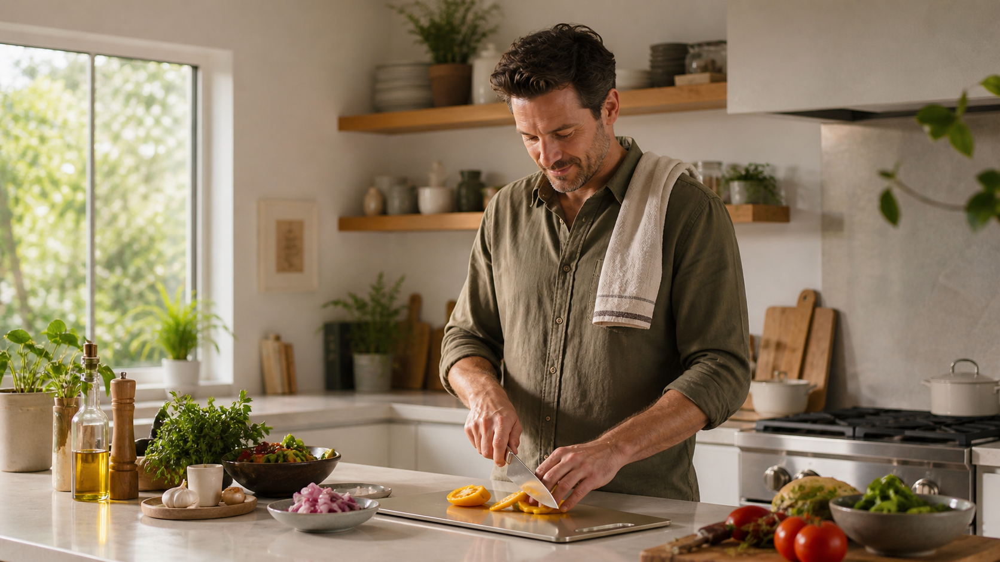

The One Item In Your Kitchen That’s Making You Sick
New research shows cutting boards are the most common source of cross-contamination in the home kitchen — and why the fix most people try isn’t working.
Claire Donovan
· 7 min read
The surface you prep on every day may be the biggest hygiene risk in your kitchen. Photo: The Kitchen Standard
186K
Monthly Readers
9,200+
Home Cooks Reached
4.8 / 5
Reader Rating
As featured in
Bon AppétitFood52Serious EatsThe Kitchn
THE KURA BOARD
Food-grade 304 stainless steel. Non-porous. Dishwasher safe. The last cutting board you’ll ever buy.
You clean your cutting board every night. It’s still not clean.
Most people assume a quick rinse — or even a full dishwasher cycle — leaves their cutting board hygienic. The board looks clean. It smells fine. So what else is there to worry about?
Quite a lot, as it turns out. The moment a knife blade contacts the surface of a wooden or plastic board, it opens a groove. A micro-channel. Something too small to see, impossible to scrub out, and perfectly sized to trap raw meat juices, fish residue, and the kind of bacteria — Salmonella, E. coli, Listeria — that cause the foodborne illness affecting an estimated 48 million Americans every year.
The FDA identifies cutting boards as one of the most significant vectors for cross-contamination in home kitchens. Not a rare edge case. The common one. The everyday risk, hiding in plain sight on your counter.
Most home cooks respond the way they’ve been taught: replace the board more often, use different boards for meat and vegetables, or switch from wood to plastic — which, as it turns out, is no better. Plastic warps, stains, and sheds microparticles into food over time. None of these approaches solve the problem. Because the problem is the material itself.
Every Cut Opens a Bacteria Trap
A 2018 study published in the Journal of Food Protection found that pathogenic bacteria could survive inside wooden cutting board grooves for up to 48 hours after contact — even after standard cleaning protocols were followed. A separate study found that plastic boards harbor bacteria at comparable rates, and that surface deterioration accelerates the problem over time.
The root issue isn’t hygiene habits. It’s surface porosity. Organic and plastic materials absorb liquid at the microscopic level. They crack, warp, and split with heat and moisture exposure. And every surface imperfection — every groove, every hairline scratch — becomes a potential colony site.
Sources: Journal of Food Protection, 2018 — “Bacterial Survival on Wooden and Plastic Cutting Board Surfaces”; FDA Food Safety Guidelines for the Home Kitchen, 2021.
Antimicrobial coatings, bamboo alternatives, mineral oil treatments, baking soda scrubs — the kitchen industry has cycled through workarounds for decades. None of them address the material’s fundamental limitation. If the surface is porous, it will harbor bacteria. The fix isn’t a better cleaning routine. It’s a different surface entirely.
“If your cutting board can absorb a drop of water, it can absorb everything else that touched it today.”
Professional kitchen environments — commercial restaurants, hospital catering, research laboratories — use stainless steel prep surfaces almost exclusively. Not for aesthetics. Because steel is non-porous at the molecular level. It cannot absorb liquids. It cannot harbor bacteria the way organic materials do. It is the only food-contact surface that can be genuinely, measurably sanitized.
The KURA Board is built from food-grade 304 stainless steel — the same specification used in professional kitchens worldwide. At 0.7mm thickness, it’s rigid and stable. The surface is smooth enough for clean, precise cuts without dulling blade edges, and it’s entirely non-reactive to acids, oils, and proteins. It won’t warp. It won’t crack. It won’t absorb anything.
Drop it in the dishwasher. Rinse it under the tap. Either way, you’re done in seconds with a board that is genuinely, verifiably clean — not just visually clean. No soaking. No special treatment. No wondering whether last night’s raw salmon is still in there somewhere.
“
The single most impactful upgrade a home cook can make to their kitchen hygiene isn’t a new cleaning product or a new technique — it’s moving away from porous surfaces entirely. What professional kitchens have known for decades, home cooks are only beginning to catch up with.
Dr. Sarah Holt
Food Safety Consultant & Culinary Science Writer
How The KURA Board Works
The difference isn’t marketing. It’s material science. Here’s why steel outperforms every alternative on the three properties that actually matter in food prep.
01
Non-Porous by Design
304 stainless steel has zero surface porosity. No grooves, no channels, no absorption pathways. Bacteria have nowhere to hide and nothing to feed on. A standard rinse removes everything.
02
Warp-Proof Construction
Unlike wood or plastic that expands, contracts, and eventually warps with heat and moisture, stainless steel holds its geometry indefinitely. Flat on day one. Flat after five years of daily use.
03
Knife-Safe Finish
The brushed steel surface reduces blade drag for cleaner, more precise cuts — and keeps knife edges sharper for longer. No rough grain pulling at the blade with every chop.
Food-Grade 304 Stainless Steel
100% Dishwasher Safe
No coatings, no chemicals, no additives
Used in professional kitchens worldwide
The KURA Board contains no coatings, surface treatments, or chemical additives of any kind. 304 stainless steel is inert, non-reactive, and food-safe as a base material. There is nothing applied to the surface — what you see is what it is: pure steel, shaped and finished for kitchen use. No certification needed, because there is nothing to certify.
From “Never Again” to Every Night

When Marcus and his partner moved into their first home, they bought a large wooden chopping board as a housewarming gift to themselves. Within six months it had started splitting along the grain. Within a year, the surface was stained brown despite regular scrubbing. After a bout of food poisoning their doctor attributed to cross-contamination, they threw it out and started looking for something better.
Marcus found the KURA Board while researching what professional chefs actually use. “I expected to pay three or four times more for something this quality,” he said. “The first time I ran it through the dishwasher and pulled it out looking exactly like day one, I understood why restaurants use steel. I’ve since bought a second one for my sister.”
“Over 9,200 home cooks have already made the switch. Every single one says they’d never go back to wood or plastic.”
Five material and design properties that put The KURA Board in an entirely different category from every wooden and plastic alternative.
Food-Grade 304 Steel
The industry standard for professional food-contact surfaces. Non-toxic, non-reactive, safe for every ingredient and every prep method.
Zero Porosity
The molecular structure of steel eliminates the absorption pathways that make wood and plastic boards persistent bacterial hotspots.
Warp-Proof Geometry
Steel does not expand or contract with heat and moisture. The board is flat on day one and flat after five years of daily use.
Knife-Safe Finish
Engineered for smooth, clean cuts without micro-abrasion. Blade edges stay sharper for longer compared to wood or glass alternatives.
Lifetime Build
No delamination, no staining, no degradation. One KURA Board replaces every cutting board you would otherwise buy in a decade.
Limited Time Offer
Get The KURA Board — 15% Off Today
The last cutting board you will ever buy. Free of bacteria traps, free of warping, and free of the quiet doubt that your prep surface isn’t as clean as it should be. Join 9,200+ home cooks who made the switch and never looked back.
Secure checkout · 30-day satisfaction guarantee · Free shipping on all orders
What KURA Customers Are Saying
9,200+ verified reviews · 4.8 out of 5 stars
“So easy to clean”
Threw out my old wooden board the same day this arrived. Wipes clean after raw chicken. I genuinely can’t go back.
James K. — Atlanta, Georgia
Verified Purchase
“Unbelievable quality”
The size is perfect, the weight feels solid, and it doesn’t slide while I’m cutting. Worth every penny — this is what a kitchen essential should be.
Linda R. — Austin, Texas
Verified Purchase
“I was skeptical at first”
I didn’t think metal would work as a cutting board. But it’s smooth, doesn’t dull my knives, and it’s the cleanest board I’ve ever owned. Genuinely no going back.